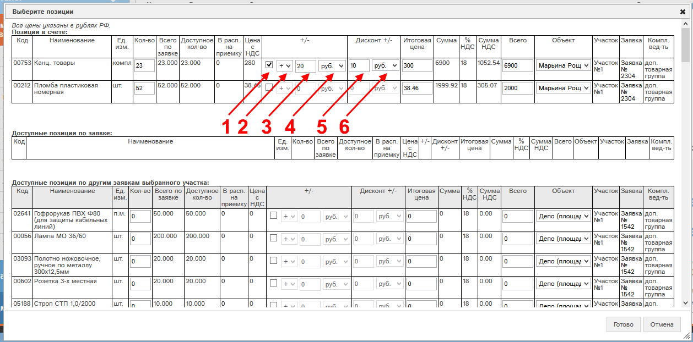
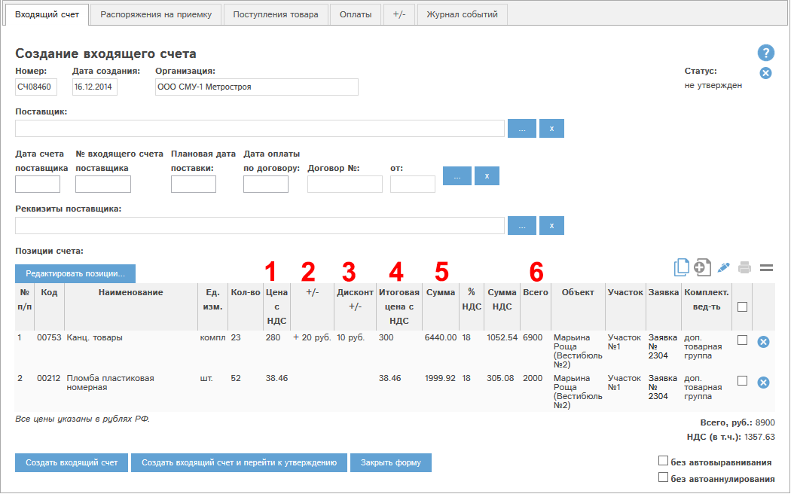

Рассмотрим создание +/- во входящих счетах. Создадим счет из заявки, затем нажмем в карте счета кнопку «Редактировать позиции…»:

Рис. 4.1 Редактирование +/- в режиме редактирования позиций счета.
Откроется окно редактирования позиций счета (Рис. 4.1). В нем есть возможность указать +/- и дисконт +/- для каждой из позиций счета.
Для установки +/- у каждой позиции нужно:
Эти действия нужно проводить с каждой позицией, для которой задаются +/-.
Нажмем кнопку «Готово», карта счета примет вид:

Рис. 4.2 +/- в карте счета.
На Рис. 4.2: